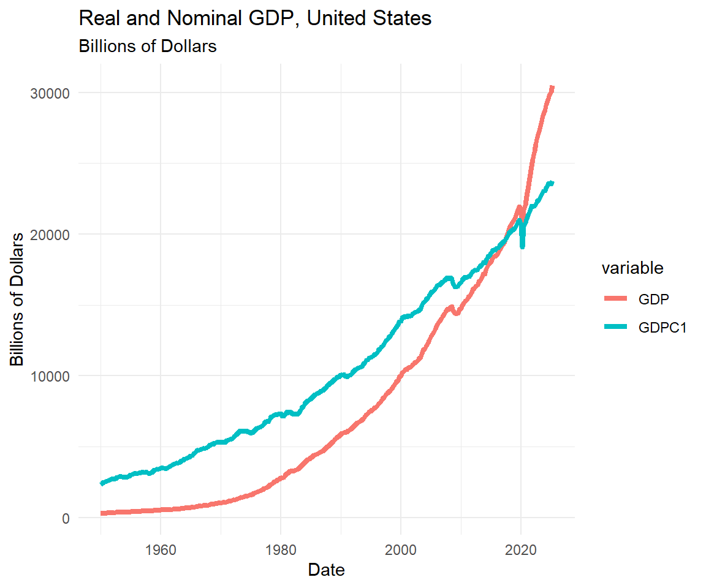
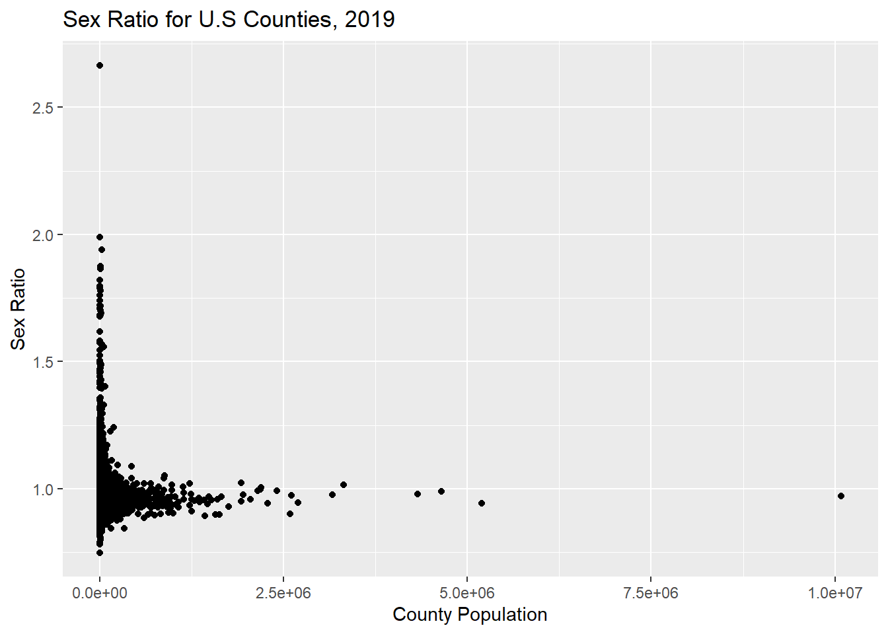

We can use the assignment operator in R to assign values to a variable. The assignment operator can be thought of as moving a value, character, date, or other form into a named variable.
The assignment operator is “<-”.
The line, “x2 <- 1056”, means assign the value 1056 to the variable x2.
In the code below, we assign the numerical value of 2 to the variable x1 and the numerical value of 4.5 to the variable x2.
We can assign the value contained in one variable in another. For example, we can assign x2 to x3 and also specify that the integer value of x2 is assigned to x3.
6.2 Assigning Character Values to a Variable
We can assign character values to a variable. In the following code, we assign the name “Timothy” as a character to the variable .
There is a subtle but important difference to storing a value as a character or as a numeric variable.
We assign the or value 06250 to and 06250 as a or value to .
Note what happens: when stored as a numeric value, 06250 is stored as 6250. When 06250 is stored as “06250” as a character variable, the character variable does not “lose” then “0” in the front of “06250”.
This can be very important if you are storing an identification value with a leading 0.
── Attaching core tidyverse packages ──────────────────────── tidyverse 2.0.0 ──
✔ forcats 1.0.0 ✔ stringr 1.5.1
✔ purrr 1.1.0 ✔ tibble 3.3.0
✔ readr 2.1.5 ✔ tidyr 1.3.1
── Conflicts ────────────────────────────────────────── tidyverse_conflicts() ──
✖ dplyr::filter() masks stats::filter()
✖ xts::first() masks dplyr::first()
✖ kableExtra::group_rows() masks dplyr::group_rows()
✖ dplyr::lag() masks stats::lag()
✖ xts::last() masks dplyr::last()
ℹ Use the conflicted package (<http://conflicted.r-lib.org/>) to force all conflicts to become errors
library(kableExtra)#Assign the character Timothy to name_1name1 <-as.character("Timothy")#Assign the numeric value 06250 to x_4x4 <-06250#Assign 06250 as a character name2 <-as.character("06250")#Convert the character 06250 to numericname3 <-as.numeric(name2)# Outputname1
[1] "Timothy"
x4
[1] 6250
name2
[1] "06250"
name3
[1] 6250
6.3 Assigning Date Values to a Variable
We can also store dates and work with dates. We assign 2020-09-01 a date value using the package. Note that we tell the package that the format of the date is year-month-day (ymd).
Likewise, we assign 09-05-2020 to date2 as a date variable but tell the package that the format of the date is now month-day-year (mdy). Note that even though the dates are in different formats, the package transforms the dates into a format recognizable by R.
Having transformed the date values, we can calculate the time difference by assigning to variable .
rm(list =ls())#Load packageslibrary(dplyr)library(lubridate)library(tidyverse)library(kableExtra)#Convert the text "2020-09-01" to a date variabledate1 <- lubridate::ymd("2020-09-01")#Convert "2020-09-05" to a date variabledate2 <- lubridate::mdy("09-05-2020")#Calculate the time difference between two variablesdate3 <- date2 - date1#Output the variables date1
[1] "2020-09-01"
date2
[1] "2020-09-05"
date3
Time difference of 4 days
7 Vectors and Data Frames
7.1 Creating Vectors
We can now create a vector that contains several values. In the following example, we combine several numbers and assign them to the variable .
We can also combine other variables (if they are the same type) to form a new vector. You can combine single element variables with vectors to create a new vector .
rm(list =ls())#Load packageslibrary(dplyr)library(lubridate)library(tidyverse)library(kableExtra)# Assign values to x1, x2, x3, x4x1 <-1x2 <--5x3 <-136x4 <-0.47x5 <-4840#Create a row vector x5 <-c(12, 13, 14, 25, 100)#Use existing variables to create a row vectorx6 <-c(x1, x2, x3, x4, x5)# Use Kable To Create Tables of X5 and X6kable(x5)
x
12
13
14
25
100
kable(x6)
x
1.00
-5.00
136.00
0.47
12.00
13.00
14.00
25.00
100.00
When we display , for example, we note is a row vector consisting of one row and 5 elements. We can also directly manipulate by multiplying it by two.
We should, however, understand that product of and 2 is not stored, it’s a direct manipulation and not available for future use. If we wanted to store it, we would have to assign it to a variable. Here, we assign the product of and 2 to the variable .
#Output x5 * 2kable(x5)
x
12
13
14
25
100
kable(x5*2)
x
24
26
28
50
200
#Assign x5*2 to x7x7 <- x5*2kable(x7)
x
24
26
28
50
200
7.2 Creating a Data Frame
So far, everything we have created has been stored as a variable or vector. A consists of rows and columns. The organization of the matrix is important. In some cases, the rows will correspond to individual observations with variables in the columns. In other cases, the variables are in the rows and individuals in columns. Matrices can contain quantitative and qualitative elements.
A matrix is a table or a two-dimensional array-like structure. In R, a is a list of variables with the same number of rows with unique row names. It is represented by the class .
A can have one column with numeric elements, another with date elements, another with character elements, and so on. The CDC data earlier in this module is an example of a data frame.
First, let’s create two row vectors, and . We can these together using the row bind, , or column bind, , functions.
The function “stacks” the observations in the vectors. The function “adds” the column of the second vector to the first vector, creating a data frame with two columns.
Now, let’s column bind and together as a data frame. We then row bind and together as another data frame
is a data frame where the observations are in rows and the variables are in columns. is a data frame where the variables are in the rows and the observations are in the columns.
rm(list =ls())#Load packageslibrary(dplyr)library(lubridate)library(tidyverse)library(kableExtra)#create two vectorsx8 <-3:6x9 <-10:13kable(rbind(x8,x9))
x8
3
4
5
6
x9
10
11
12
13
kable(cbind(x8,x9))
x8
x9
3
10
4
11
5
12
6
13
#Create Data Framesdf1 <-data.frame(cbind(x8,x9))df2 <-data.frame(rbind(x8, x9))kable(df1)
x8
x9
3
10
4
11
5
12
6
13
kable(df2)
X1
X2
X3
X4
x8
3
4
5
6
x9
10
11
12
13
7.3 Using an Existing Dataframe
R comes with a number of “built in” data sets. For the following discussion, we use the data. The data contain observations on a number of cars from the Motor Trend magazine.
One can work directly with the data or assign the data to a data frame. In the following, we assign to the data frame. We use the assignment operator so that data flows from to .
We can now use the or functions to examine the structure of the data frame. Note that the function returns the first six rows while the function returns the last six rows.
rm(list =ls())#Load packageslibrary(dplyr)library(lubridate)library(tidyverse)library(kableExtra)#Assign mtcars to cardata cardata <- mtcars# View structure of the data framehead(cardata)
To find the dimensions of a data frame, we can determine the number of rows and the number of columns separately or together. First, the and functions determine the number of rows and columns in a data frame, respectively.
We can also use the function to return the dimensions of the data frame. Note that the function returns rows then columns.
# Number of rowsnrow(cardata)
[1] 32
# Number of columnsncol(cardata)
[1] 11
# Dimensions of data frame (rows and columns)dim(cardata)
[1] 32 11
7.5 Selecting Rows or Columns in a Data Frame
Having determined the dimensions of the data frame, we can now select parts of the data frame.
We can approach this by recognizing that a data frame is organized by rows and columns. For example, returns the value stored in the intersection of the first row and first column in the data frame. The first row in the data frame is for the Mazda RX4 and the first column in the data frame is for miles per gallon, so the intersection of these two produces a value of 21.0. In other words, the Maxda RX4 earns 21.0 miles per gallon.
So, in general, for a data frame, . For example, returns rows 1 to 2 and columns 2 to 3.
# First observation, First variable.cardata[1,1]
[1] 21
# First two observations, 2nd and 3rd variablescardata[1:2, 2:3]
cyl disp
Mazda RX4 6 160
Mazda RX4 Wag 6 160
If the row or column is left blank, all values for the column are the result. For example, would return all rows for the first column of data. On the other hand, would return the first two rows and all the columns.
7.6 Manipulating the Dataframe and Adding New Variables
Starting with the data frame, we can now utilize one of the features of the packages to the data. Piping means that the data ‘flows’ in the direction of the pipe. It’s actually called a pipeline of data.
A bit of housekeeping. We want to convert the rownames in to a variable. We pipe the data frame and then use the function to do just that. We then pipe the data to rename the new variable to .
We can now use the function to create a new variable or replace an existing variable.
In the following code, the data flow from to the next line of code to create a new variable using the function.
Imagine a temporary data frame that consists of with a new column for the variable.
Each new line of within the function creates a new variable. The second variable that we create converts kilometers per gallon to kilometers per liter or .
Your temporary data frame now consists of the data frame plus the two new variables.
The third line of the statement creates a new variable that converts miles per gallon into kilometers per liter, essentially duplicating the process of the first two lines of the mutate statement. The new variable is called .
At this point, you decide you only need to keep a subset of variables. We pipe the resulting data frame to the statement. The variables included in the select statement are kept in the temporary data frame while the variables excluded from the select statement are deleted from the temporary data frame.
You have now reached the end of the pipe. The “<-” at the beginning then assigns all the data in the temporary data frame to the data frame. Because we have used the grammar of piping, the original data frame is unchanged.
The grammar of piping is very useful as it allows you to manipulate a data frame without changing the contents of the original data frame.
Note how we can start using some of the additional features in the kable package to rename column names for improve presentation.
kable(cardata2[1:5,],col.names =c("Car","MPG","Cylinders","Weight","Kilometers per Gallon","Kliometers per Liter","Squared KM/Gallon")) %>%kable_classic()
Car
MPG
Cylinders
Weight
Kilometers per Gallon
Kliometers per Liter
Squared KM/Gallon
Mazda RX4
21.0
6
2.620
33.79614
127.9322
127.9322
Mazda RX4 Wag
21.0
6
2.875
33.79614
127.9322
127.9322
Datsun 710
22.8
4
2.320
36.69295
138.8979
138.8979
Hornet 4 Drive
21.4
6
3.215
34.43988
130.3691
130.3691
Hornet Sportabout
18.7
8
3.440
30.09466
113.9206
113.9206
8 Working with an API
8.1 4.1 The FRED API for Real GDP
An Application Programming Interface (API) allows us to obtain data from a source without having to manually downloading the data. In effect, an API allows us to “grab” data from an external source. If the external source updates the data, then our next API call with obtain the updated data.
For example, let’s say we wanted to obtain data from FRED on real Gross Domestic Product (GDP) for the United States from 1980 to the most current data available. We could go to FRED, search for real GDP, find the real GDP variable is called , and download the data into an Excel file. This process is labor-intensive and subject to error.
FRED:
Real GDP:
We can use an API call to obtain the data. Instead of having to write the code for an API call, we can use a package called .
We have the variable name and so we can simply use the function in to retrieve the real GDP series. Note that we rename the variable to and we convert the date using the package.
We can use the or to print out the contents of the first rows of the resulting data frame.
We see the data are organized such that each row corresponds to a time period, that is, the first row represents real GDP for the 1st quarter of 1950, the second row represents real GDP for the 2nd quarter of 1950, and so on.
rm(list =ls())#Load packageslibrary(dplyr)library(lubridate)library(tidyverse)library(kableExtra)library(tidyquant)#Use tq_get to obtain real GDP from FREDrgdp <-tq_get("GDPC1",get ="economic.data",from ="1950-01-01" ) %>%rename(rgdp = price) %>%mutate(date = lubridate::ymd(date))kable(rgdp[1:5,])
symbol
date
rgdp
GDPC1
1950-01-01
2346.104
GDPC1
1950-04-01
2417.682
GDPC1
1950-07-01
2511.127
GDPC1
1950-10-01
2559.214
GDPC1
1951-01-01
2593.967
8.2 The FRED API for Nominal GDP
We can also make an API call to FRED for the nominal GDP series. Much like the real GDP API call, we have a data frame with the variable containing the values for nominal GDP. We rename the variable to and also use the pacakge for the dates.
Nominal GDP:
rm(list =ls())#Load packageslibrary(dplyr)library(lubridate)library(tidyverse)library(kableExtra)library(tidyquant)#Use tq_get to obtain nominal GDP from FREDgdp <-tq_get("GDP",get ="economic.data",from ="1950-01-01" ) %>%rename(gdp = price) %>%mutate(date = lubridate::ymd(date))kable(gdp[1:5,])
symbol
date
gdp
GDP
1950-01-01
280.828
GDP
1950-04-01
290.383
GDP
1950-07-01
308.153
GDP
1950-10-01
319.945
GDP
1951-01-01
336.000
8.3 The FRED API for Nominal and Real GDP
In the previous examples, we made an API call for one variable at a time. The result was two data frames, one for nominal GDP, and one for real GDP. It would be more efficient to make one API call that results in a single data frame with both variables.
In the following code, we the names of the two variables, that is, creates a row vector with the two names. This row vector is used by the function to make an API call to obtain the two variables from FRED.
What’s important to note is that the data fame is in format. In other words, each row corresponds to one period of time for one variable.
We have to do some housecleaning. When we obtain the data from FRED, the variable names are contained in a variable called and the values are contained in a variable named . We rename those to and , respectively.
We then plot the data using the package. The function is very flexible and you can modify almost every element of a graph. For now, we provide the example and will work on developing our graphing skills later on in the course.
rm(list =ls())#Load packageslibrary(dplyr)library(kableExtra)library(lubridate)library(tidyquant)library(tidyverse)library(ggplot2)#Use tq_get to obtain nominal and real GDP from FREDall_gdp <-tq_get(c("GDP", "GDPC1"), get ="economic.data",from ="1950-01-01") %>%mutate(date = lubridate::ymd(date)) %>%rename(variable = symbol,value = price)# Produce Table of First 10 Observationskable(all_gdp[1:10,],col.names =c("Variable","Date","Value"))
Variable
Date
Value
GDP
1950-01-01
280.828
GDP
1950-04-01
290.383
GDP
1950-07-01
308.153
GDP
1950-10-01
319.945
GDP
1951-01-01
336.000
GDP
1951-04-01
344.090
GDP
1951-07-01
351.385
GDP
1951-10-01
356.178
GDP
1952-01-01
359.820
GDP
1952-04-01
361.030
#Use GGPLOT #GDP over timeggplot(data = all_gdp, aes(x = date, y = value,color = variable,group = variable)) +geom_line(linewidth =1.5) +theme_minimal() +labs(title ="Real and Nominal GDP, United States",subtitle ="Billions of Dollars",x ="Date",y ="Billions of Dollars")

9 An Example with US Census Data
refers to data that contains all members of a specified group. N is the number of individuals in the population. We can think of the population as the universe of individuals for the variable or variables of interest.
A refers to a subset or part of the population with sample size \(n\) that is less than the population size \(N\) or \(n < N\).
9.1 Using the Census API
In the following code, we use the package to use the United States Census Bureau’s API for the American Community Survey to obtain data on county population for 2019.
We are using data from the American Community Survey 5-Year estimates which provide estimates for counties and county-equivalents in the United States.
To set up the API, you will need to understand what variable names are used by the API developer.
Here we rely on the ACS API documentation:
We can also use built in functions of the censusapi package.
First, we can use to obtain a data frame with all the Census’ API.
We then can use for a specific API to determine what variables we can access and the names of these variables.
You will have to register for your own free Census API key.
You can do this at:
rm(list =ls())#Load packageslibrary(censusapi)library(dplyr)library(kableExtra)library(lubridate)library(tidyquant)library(tidyverse)library(ggplot2)# List all the available Census APIsapis <-listCensusApis()# List all the variables in the ACS 5-Year API# Note that this takes a while, you should only run this when neededacs_vars <-listCensusMetadata(name ="2019/acs/acs5", type ="variables")
9.2 An API Call Example
We can now use the function in the package to obtain 2019 ACS data for total population. In doing so, we obtain data on the the universe of counties and county equivalents for the United States for 2019 with respect to total population.
We use the function to sort by state FIPS code (a geographical identification code) and then county FIPS code.
#Note that B01001_001 = Total Populationcounty_pop <-getCensus(name ="acs/acs5", vintage =2019,key ="9c1637a56ff93f0af6b4b1d0547ea048fe668175",vars =c("NAME","B01001_001E"),region ="county:*") %>%rename(total_pop = B01001_001E,county_fips = county, state_fips = state) %>%arrange(state_fips, county_fips)kable(county_pop[1:5,])
state_fips
county_fips
NAME
total_pop
01
001
Autauga County, Alabama
55380
01
003
Baldwin County, Alabama
212830
01
005
Barbour County, Alabama
25361
01
007
Bibb County, Alabama
22493
01
009
Blount County, Alabama
57681
9.3 Filtering to Focus On One State
We can then use the function to obtain a subset of the data. Here, we filter the data to only keep those observations for which the state FIPS code is 51, which happens to be the FIPS code for Virginia.
We use the existing data frame which we created using the previous code example.
We can also obtain multiple variables from one API call. In the last example, we obtain total population, male population, and female population from the 2019 ACS 5-Year estimates. We then calculate the sex ratio, which is equal to the male population divided by the female population and plot the sex ratio.
We note that there is one very large county in the data (Los Angeles, California). We also note there is another county where there are approximately 3.5 males to every woman (Forest County, Pennsylvania).
# Obtain Population by Sex, Total Male Population, Total Female Population# B01001_001E - Population Total by Sex# B01001_002E - Total Male Population# B01001_026E - Total Female Population# Calculate sex-ratio = male population / female populationsex_pop <-getCensus(name ="acs/acs5", vintage =2019,key ="9c1637a56ff93f0af6b4b1d0547ea048fe668175",vars =c("NAME","B01001_001E","B01001_002E","B01001_026E"),region ="county:*") %>%rename(total_pop = B01001_001E,male_pop = B01001_002E,female_pop = B01001_026E,county_fips = county, state_fips = state) %>%mutate(sex_ratio = male_pop / female_pop) %>%arrange(state_fips, county_fips)ggplot(data = sex_pop,aes(x = total_pop, y = sex_ratio)) +geom_point() +labs(title ="Sex Ratio for U.S Counties, 2019",x ="County Population",y ="Sex Ratio")

9.5 Basic Operations
Let’s first try some basic math operations in R using webR.
Notice that when you run the code that R produces the output.
Try adding the following to the code and executing the code: \((6 \times 12)/24\).